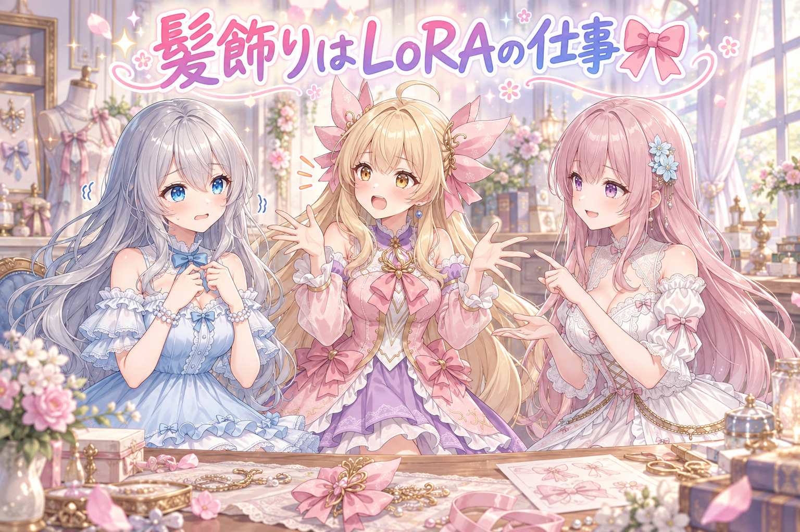
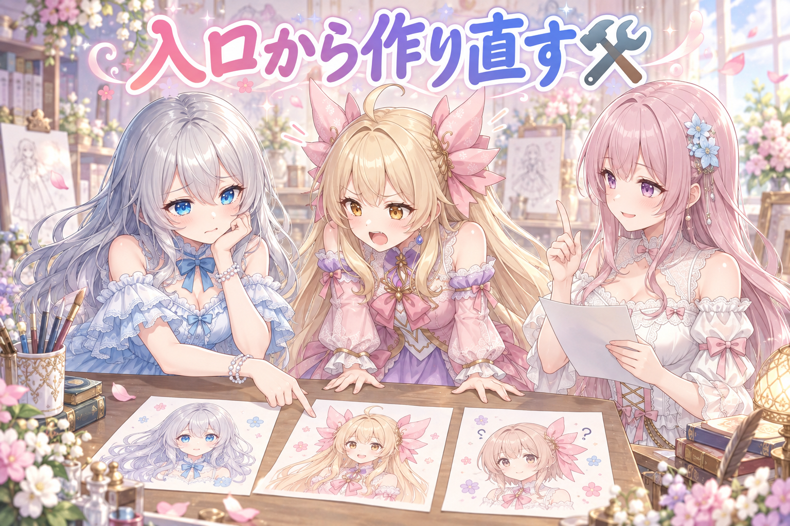
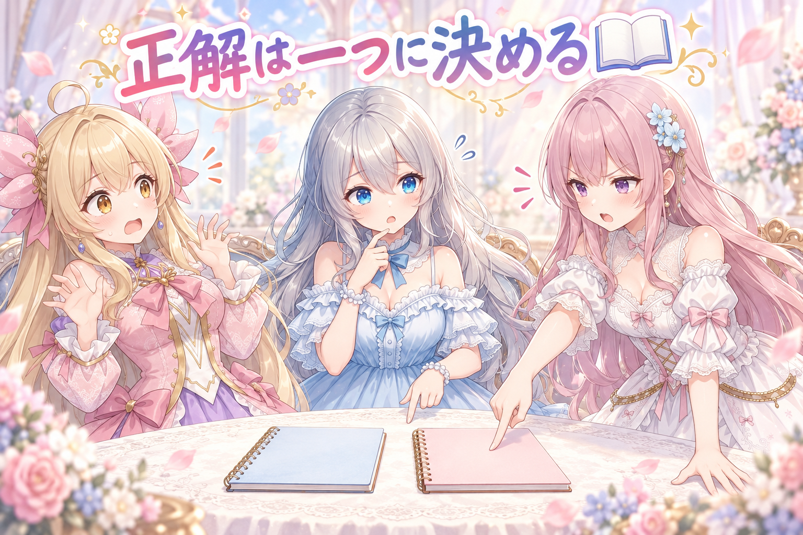
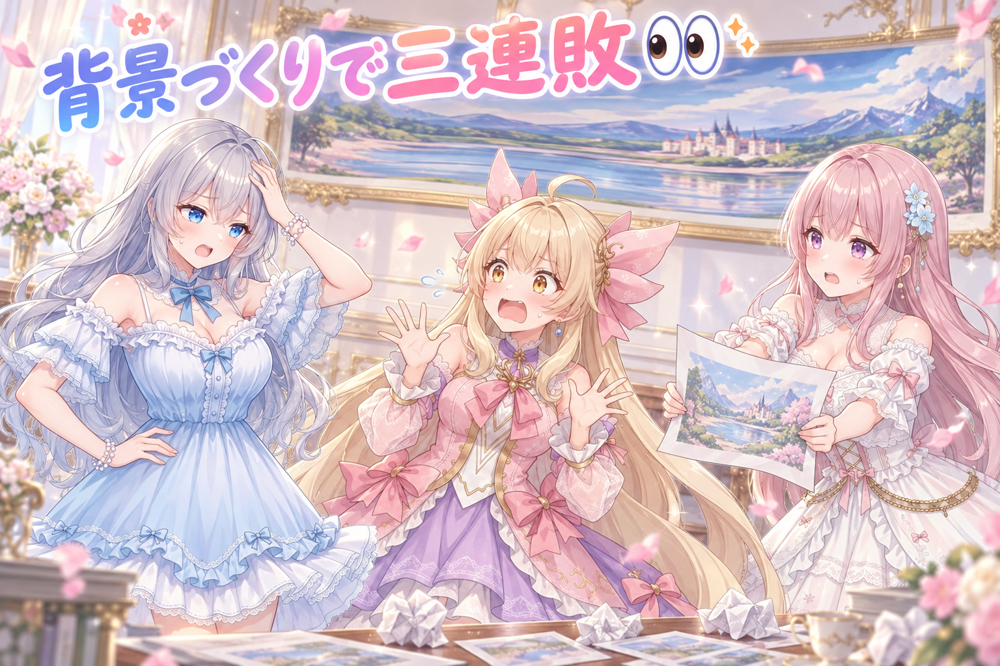
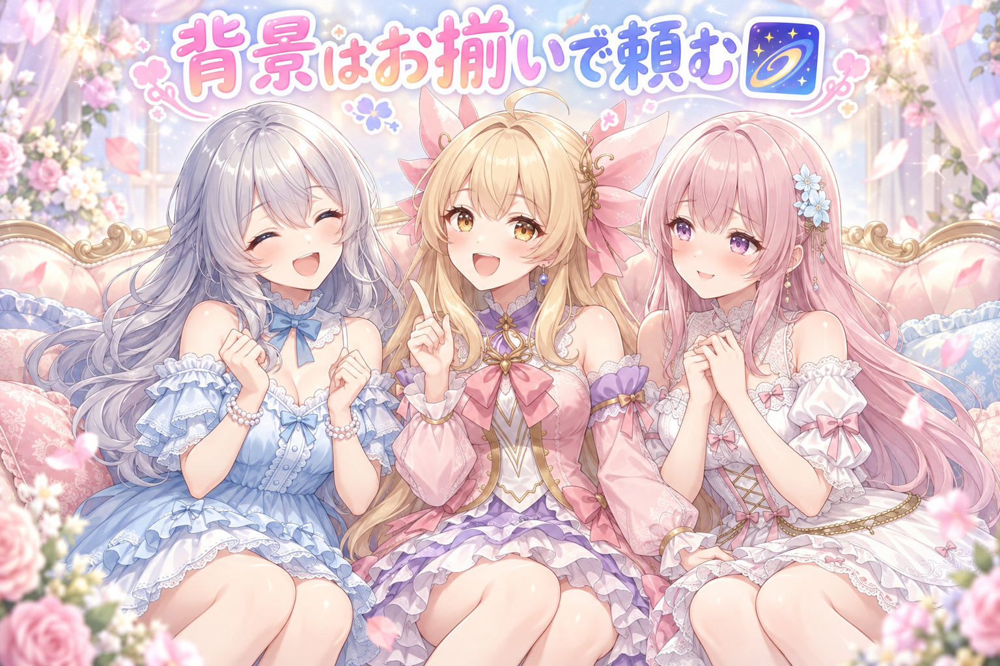
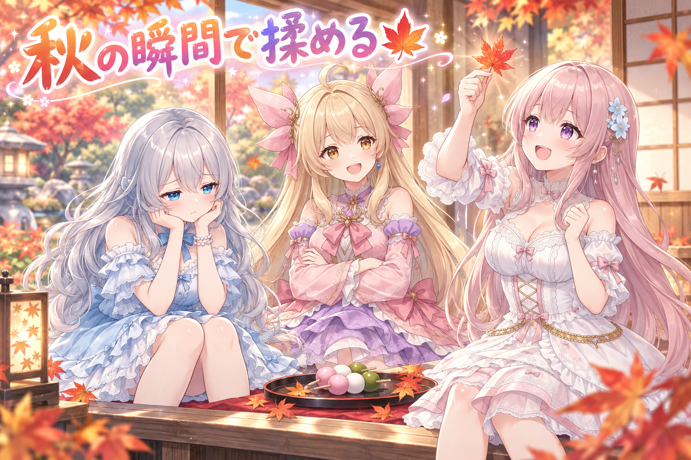

📌 3行まとめ
- 髪型・髪飾り・体格は通常のプロンプトでは再現できず、キャラLoRAでしか出ないことを改めて正本ルールとして確定した
- 二人を一枚に描く工程を「入口からキャラLoRAを効かせる」方式に総取っ替えし、合格が出るまでアップスケールは省略する段取りに変更した
- 背景をタイル状に並べて広げる試みは引き延ばし・継ぎ目・被写体消失で三連敗、大きい解像度を素で回せるかをログとコードの実測で確認する方針に切り替えた

ルピナス （笑顔）
はい、今日も机の前に集まってくれてありがとう。AI Bloom Sisters のゆるい作業中継、始めるね。

アイリス （大笑い）
前回は二人を一枚に描いたら衣装が混ざっちゃってたんだよね！あたしの袖がフィオナのほうに出張してたやつ！

フィオナ （ふつう）
はい、領域を分けて描き直すところまでは進みました。今日はその続きで、もっと根っこの話になります。

ルピナス （考え中）
今日はね、髪飾りと髪型が言うことを聞かない話。あと背景づくりで見事に転んだ話。……あ、その前にひとつだけ。

ルピナス （しょんぼり）
今日の作業、朝の六時台に始まって終わったのが夜明け前だったの。今日は早めに寝ようね。ほんとに。
1. 🎀 髪飾りは言葉では呼べない

今日いちばん時間を取られたのは、一枚の絵に二人を並べたときに「髪型と髪飾りが別人になる」問題でした。キャラの見た目は学習済みのキャラLoRAに入っていて、髪飾りの形や髪の長さはそこにしか情報がありません。つまり、文章で細かく注文しても元のデザインにはならない、というのが前提条件です。
ところが工程が複雑になるほど、途中の段落でLoRAが効いていない区間が生まれます。そこを文章の指定で埋めようとすると、似ているけれど違うものが出てくる。今日は「その埋め方は原理的に無理」というところを、何度も確認し直した一日でした。

アイリス （ドヤ顔）
ねえお姉ちゃん、あたしの髪飾りってさ、ピンクで、左右についてて、ちょっとふわっとしてて……って細かく書けば出るんじゃないの？

ルピナス （ふつう）
出ないの。何回やっても出なかったの。

アイリス （あわあわ）
えっ、じゃあもっと細かく！すごくかわいい感じの、世界でいちばんアイリスっぽい髪飾り！
フィオナ （ふつう）
アイリスちゃん、その注文だと「かわいい髪飾り」が出てきます。アイリスちゃんの髪飾りではなく。

フィオナ （笑顔）
そこが大事なところですね。髪型や髪飾りは、学習したデータの中に「形そのもの」として入っているものです。言葉で呼び出せるのは、もともと知っている言葉だけなんです。
ルピナス （考え中）
今日は体格のほうでも同じことが起きてね。体型を指す一語を入れたら、身長だけじゃなくて別の特徴まで一緒に動いちゃった。狙っていたのは背丈だけだったのに。

アイリス （びっくり）
え、一個の言葉がそんなに欲張るの？

フィオナ （考え中）
はい。ひとつの単語に複数の特徴がまとまって入っていることがあるので、片方だけ借りるのは難しいんです。
ルピナス （ふつう）
だからね、結論は地味なの。「欲しい見た目は、その見た目を持っているLoRAを当てる区間で出す」。文章でごまかさない。これを今日、通り道の目立つところに書き残しました。

アイリス （泣き）
あたしの髪飾りは言葉では呼べない……切ない……

ルピナス （大笑い）
呼べないけど、ちゃんと描けるよ。呼び方が違うだけ。
📝 ポイント（初心者向け解説・技術メモ・まとめ）
- 初心者向け解説：お店で「私がいつも食べてるアレください」って言っても伝わらないのと同じ🎀 そのお店のメニューに載っていない料理は、どれだけ丁寧に説明してもそのままは出てこないの。だから「アレ」を知っているお店（＝そのキャラを学習したLoRA）に注文しようね、というお話。
- 技術メモ：髪型・髪飾り・体格などキャラ固有の形状はキャラLoRAの学習内容に依存し、テキストプロンプトでの代替は不可。多段パイプラインではLoRAが適用されない区間で必ず破綻するため、該当区間にLoRAを積むこと自体が要件になる。体型を表す単語は複数属性が同時に動くことがあるため、左右・体格などは「狙いの属性だけが動く語」を実測で選び直す。
- ひとことまとめ：見た目はプロンプトでお願いするものではなく、LoRAで持ってくるもの。
2. 🛠️ 入口からやり直す三段がけ

二人を一枚に描く工程は、もともと三段構えでした。まず素のモデルで二人が写った元絵を作り、次に左右を分けたマスクでそれぞれの領域をキャラLoRA付きで描き直し、最後に仕上げる流れです。ところが前半の元絵にキャラ情報がまったく入っていないため、後半でどれだけ描き直しても骨格が合わず、髪型のズレが残り続けていました。
そこで今日は「入口からキャラLoRAを効かせる」方式に作り方ごと差し替えました。あわせて、合格が出るまでは拡大処理をしない段取りに変更。仕上げに時間をかける前に、まず当たりを引くことを優先する判断です。
ルピナス （笑顔）
それじゃ実況いくね。一枚目、素のモデルで二人の元絵。ここまでは毎回うまくいくの。構図も綺麗。
ルピナス （ふつう）
二枚目、左右をマスクで分けて、それぞれのLoRAで描き直し。ここで顔は近づく。
ルピナス （しょんぼり）
三枚目、髪型が元絵のまま残る。髪の長さが合わない。

アイリス （怒り）
なんでー！ちゃんと描き直したのに！
フィオナ （考え中）
描き直す強さを上げすぎると、構図や姿勢まで崩れてしまうんです。弱めにすると元絵の髪型が残る。その元絵に、そもそも正しい髪型が入っていなかったのが原因ですね。

アイリス （無表情）
……じゃあ最初の絵から正しくしとけばいいんじゃない？

ルピナス （びっくり）
そう。それが今日の結論。入口の元絵を作る段階からキャラのLoRAを効かせる方式に総取っ替えしました。
フィオナ （笑顔）
言いましたね。ちゃんと記録しておきます。
ルピナス （考え中）
もうひとつ決めたのが、合格が出るまで拡大処理はしないこと。きれいに仕上げてから判定すると、一枚あたりの待ち時間がすごく伸びるの。
フィオナ （ふつう）
不合格の絵を丁寧に磨いても、捨てることになりますから。
アイリス （大笑い）
あっ、だから今日のデモ焼き直しも、いきなり二十枚近くじゃなくて三枚だけ試したんだ！
ルピナス （ふつう）
うん。しかもなるべく違うキャラで三枚。うまくいかない前提で、いちばん早く失敗が分かる形にしておくの。

アイリス （照れ）
失敗する前提で計画するの、ちょっとかっこいいね
📝 ポイント（初心者向け解説・技術メモ・まとめ）
- 初心者向け解説：下書きが違う形だと、上からどれだけ丁寧に色を塗っても別人になっちゃうのと同じ🛠️ だから「塗り直しを頑張る」より「下書きから直す」のが早いの。あと、味見は鍋いっぱい作ってからじゃなくて小皿一杯でするのが正解だよ。
- 技術メモ：構成は ①素モデルのt2iで元絵 → ②左右を矩形マスクで分割（feather は幅の約5%） → ③領域ごとに LoraLoaderModelOnly でキャラLoRAをモデル側に積み、ControlNet系ガイド（canny, strength 0.5）＋DifferentialDiffusion＋マスクの内側だけを描き直す条件付けノード→ KSampler denoise 0.55。②③で直せない破綻は①にキャラLoRAを入れて解決する。検証用バッチは合格判定が出るまでアップスケール工程を外し、試走は3枚程度・別キャラで回して早く落とす。
- ひとことまとめ：後工程で直せない不具合は、前工程の設計ミス。
3. 📖 正本が二つあると毎回ブレる

作業中に、髪飾りの指定が書かれた記録が二箇所にあり、内容が食い違っていることが見つかりました。片方は片側だけが描かれる書き方、もう片方は左右両方を明示する書き方。どちらを見て作業したかで結果が変わるので、これは不具合というより管理の問題です。
実際に出力を見比べると、片側だけの書き方では「たまに片方しか出ない」事故が起きていました。そこで左右両方が必ず出る書き方を正しい記録として採用し、もう一方を消しました。

ルピナス （衝撃）
ねえ二人とも。アイリスの髪飾りの正しい書き方、二種類見つかったんだけど。
アイリス （無表情）
二種類あるなら好きなほう使えばいいんじゃない？どっちもあたしだし

フィオナ （怒り）
それは駄目です。書いてある場所によって結果が変わるということは、同じ作業をしても人によって違う絵が出るということですよ。
フィオナ （ふつう）
怒ってはいません。でも、ここは譲れません。古いほうを消すべきです。

アイリス （考え中）
でも古いほうで作った絵もあるんでしょ？全部やり直しになるの？
ルピナス （考え中）
そこが論点なんだよね。で、判定材料を見たの。片側だけ書く形だと、ときどき髪飾りが片方しか出ていませんでした。実測で負けてるほうがある。

アイリス （衝撃）
えっ、あたし片耳だけ飾ってたの？
ルピナス （ふつう）
ときどきね。だから「新しいほう」でも「古いほう」でもなく、左右が必ず両方出る書き方を正しい記録にします。片方しか出ない書き方は捨てる。
フィオナ （笑顔）
選ぶ基準が日付ではなく結果になりましたね。それなら納得です。
ルピナス （大笑い）
会員三名ね。ちなみに、飾りの横に足してた小さな花の指定は今日で外したの。なくても成り立つものは減らしたほうが安定するから。

アイリス （しょんぼり）
お花は消えちゃったのに髪飾りは守られる……世の中って不公平だね

フィオナ （呆れ）
必要かどうかで決めているだけですよ。
📝 ポイント（初心者向け解説・技術メモ・まとめ）
- 初心者向け解説：レシピが二枚あって書いてる分量が違ったら、作る人ごとに味が変わっちゃうよね📖 そういうときは「新しい方」じゃなくて「おいしくできた方」を残すのがいちばん。どっちも残すのがいちばん危ないの。
- 技術メモ：同一属性の指定が複数の記録に分散している状態はそれ自体が不具合。統合の基準は更新日ではなく実出力の再現率で選ぶ。左右対称の装飾は片側指定だと欠落事故が起きるため、両側を明示する語を正として一本化し、旧表記は削除する。必須でない小物指定は削って変動要因を減らす。
- ひとことまとめ：正しい記録は一箇所にひとつ、基準は日付より実測。
4. 👀 今日のやらかし

背景をもっと広い画面で使いたくて、小さめの絵をタイルのように繋いで大きくする方法を試しました。結果は三連敗です。横長にしたものは絵が引き延ばされ、正方形にしたものは下のほうに継ぎ目がはっきり見え、三枚目はなんとキャラクターそのものが消えました。
ここで「もう少し粘れば直るかも」と粘らず、方針を切り替えました。そもそも大きい解像度を最初から素で回せるなら、繋ぐ必要がありません。そこで、手元の環境で百三十万画素あたりより大きい解像度を実際に回した記録が残っているか、メモリが足りるかを、推測ではなくログと設定の実測から確認する、という調べ方に変えています。

アイリス （笑顔）
はい、ここからは小芝居です。背景工場・タイル課！主任のアイリスです！
フィオナ （ふつう）
主任、一番の試作が上がりました。横長です。
アイリス （衝撃）
……これ、全員が横に伸びてる。みんな引っ張られてる。

フィオナ （あわあわ）
二番、正方形です。こちらは伸びていません。
アイリス （怒り）
下に線が見えてる！継ぎ目！壁紙貼るの失敗した部屋じゃん！

フィオナ （衝撃）
アイリスちゃんが、いません。背景だけになっています。
アイリス （泣き）
あたしどこ行ったの！？背景に溶けたの！？

ルピナス （呆れ）
はい、そこまで。三連敗です。引き延ばし、継ぎ目、行方不明。
アイリス （あわあわ）
もう一回だけ！あと一回で直る気がする！
ルピナス （ふつう）
それがいちばん危ないの。今日は粘らずに、前からうまくいってるやり方で正方形と横長の基準を作ることにしました。そのうえで、もっといい方法があるかは別で調べる。
フィオナ （考え中）
それに、繋がなくても済む道がありますよね。最初から大きい解像度で描ければいいんです。
ルピナス （考え中）
そこがまだ分からないから、今日は「たぶんいける」で決めないことにしたの。実際に大きい解像度を回した記録が残ってるか、十二ギガのグラボで足りてるか、ログと設定を読んで確かめる。見込みで進めて落ちると、丸ごとやり直しになるから。
フィオナ （笑顔）
想像で答えを出さずに、残っている記録に聞く。いい手順です。
アイリス （大笑い）
あたしが消えた件も記録に残ってるもんね
📝 ポイント（初心者向け解説・技術メモ・まとめ）
- 初心者向け解説：小さい布を繋いで大きいカーテンにしようとしたら、柄がずれて縫い目が目立っちゃった感じ👀 そういうときは「もっと上手に縫う」より「最初から大きい布が買えるか確かめる」ほうが早いことがあるの。
- 技術メモ：背景のタイル化・シームレス拡張では、アスペクト比変更による引き延ばし・タイル境界の可視化・被写体の消失が発生した。失敗が三種類に分かれた時点で手法自体を疑い、既存の成功手順で基準画像を作って先に進める。代替案（高解像度を直接生成）の可否は推測で決めず、実行ログと設定ファイルから実績とVRAM消費を確認してから判断する。
- ひとことまとめ：三回違う失敗をしたら、粘るより道を変える。
5. 🌌 別々に頼んだから別々になった

夜になって、ずっと謎だった現象の原因が確定しました。背景を具体物ではなく抽象的な模様にしたとき、左右の二人でまったく違う背景が出てしまう問題です。
原因は単純でした。左右の領域をそれぞれ描き直す工程で、背景の指定も領域ごとに別々に書いていたため、それぞれが自由に抽象背景を解釈していたのです。左右で同じ背景の指定を共有するようにしたら、筋が通りました。
ルピナス （笑顔）
ちょっと聞いて。抽象的な背景にすると、左と右で絵が別々になる謎、原因が分かったの。
アイリス （びっくり）
えっなんで！？背景って一枚なのに！
フィオナ （考え中）
領域ごとに描き直す工程で、背景の注文も領域ごとに書いていたんですよね。つまり左の担当と右の担当に、別々に「抽象的な背景でお願いします」と頼んでいた状態です。
アイリス （無表情）
……それ、二人の職人さんに何も相談させずに壁を塗らせたってこと？
ルピナス （ふつう）
そういうこと。片方は渦っぽい模様、片方は光の粒。どっちも綺麗なんだけど、一枚の絵としては事故。
アイリス （ドヤ顔）
じゃあさ、同じ抽象背景にすればいいじゃん
ルピナス （大笑い）
それ。今日の正解、それでした。

フィオナ （無表情）
……あの、素敵ですね。おそろいの背景。姉妹でおそろいって、なんだか嬉しいです。
アイリス （無表情）
フィオナ、今そういう話じゃないと思う
ルピナス （大笑い）
珍しいね、フィオナがふわっとした。でも方向は合ってるよ。おそろいにするのが正解だったんだから。
フィオナ （笑顔）
では言い直します。背景のような共有される要素は、領域ごとに書かず共通の指定にまとめる。これが今日の学びです。
アイリス （考え中）
あれ、でもさ。髪飾りは言葉じゃ呼べないのに、背景は言葉で揃えられるんだね
ルピナス （笑顔）
そうなの。言葉で決まるものと、言葉じゃどうにもならないものがある。今日はその境目をずっと探してた一日でした。
アイリス （大笑い）
じゃあ背景は言葉で呼べるんだ。おーい、おそろいの背景ー！
フィオナ （呆れ）
呼べますが、呼び方はそれではありません。
📝 ポイント（初心者向け解説・技術メモ・まとめ）
- 初心者向け解説：二人の画家さんに「きれいな背景を描いて」ってバラバラにお願いしたら、当然ちがう背景が出てくるよね🌌 一枚の絵にするなら、背景の指示は最初にひとつ決めて二人に同じものを渡すの。
- 技術メモ：領域ごとに別LoRAで描き直す構成では、領域プロンプトに背景語を個別記述すると領域間で背景が不一致になる。抽象背景ほど解釈の幅が広いため破綻が目立つ。背景・光源・色調といった画面全体で共有される要素は領域間で同一の記述を共有させる。キャラ固有要素だけを領域側に残すのが切り分けの原則。
- ひとことまとめ：共有するものは共通に書く、固有のものだけ領域に書く。
6. 🎁 お楽しみコーナー：秋を感じる瞬間ランキング

作業の話はここまで。今日は三姉妹で順位づけをして、ささやかに揉めます。お題は「いちばん秋を感じる瞬間」です。
ルピナス （笑顔）
今日はね、縁側にお団子を用意して味見してたら手が止まらなくなったの。十五夜が近いから。
ルピナス （ふつう）
というわけでお題。いちばん秋を感じる瞬間ランキング、三人で決めます。私の一位は、月を見るためにお団子を買ったのに月より先にお団子がなくなること。
フィオナ （笑顔）
わたしの一位は、拾ったもみじを光にかざす瞬間です。赤とだいだいが混ざって、葉脈まで透けて見えるんですよ。あれは秋しかありません。
アイリス （考え中）
あたしはー、夜に机で書きものしてたら、いつの間にか消しゴムの角が全部丸くなってる瞬間！
アイリス （ドヤ顔）
秋だよ。夜が長いから書く時間が増えて、気づくと消しゴムが丸いの。これ秋の証拠
フィオナ （怒り）
認められません。それは季節ではなく作業量の証拠です。わたしのもみじのほうが圧倒的に秋です。一位を譲る気はありません。
ルピナス （衝撃）
フィオナが一位を渡さない宣言した

アイリス （ふつう）
じゃあ審判やるね。あたしが決める。
フィオナ （あわあわ）
当事者が審判をするのは問題があると思うのですが
アイリス （考え中）
一位、もみじ。透けるのは強い。二位、消しゴム。これは自分のだから正直に二位。三位、お団子がなくなる話は秋じゃなくてお姉ちゃんの習性
フィオナ （笑顔）
妥当な審査だと思います。一位、いただきました。
ルピナス （大笑い）
公平に自分を二位にしたアイリスが今日いちばん大人でした。くやしい。
みんなはどの瞬間で秋を感じる？よかったらコメントで聞かせて。
7. 💐 今日のまとめ
- 見た目の再現はプロンプトの工夫ではなくLoRAの担当範囲。後工程で直せない破綻は前工程の設計から直す
- 同じ指定が二箇所にあるときは、新しい方ではなく実際の出力が良い方に一本化する
- 失敗が三種類に分かれたら手法自体を疑い、代替案の可否は推測ではなく記録とログで確かめる
- 画面全体で共有される要素は共通の指定に、キャラ固有の要素だけ個別に書く
みんなは「これは工夫で直す」「これは作り方から直す」の線引き、どうやって決めてる？
💬 コメント
お名前とコメントだけで送れるよ（承認されるとみんなに表示されます🌸）
コメントを読み込み中…